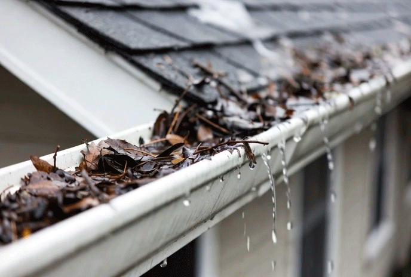
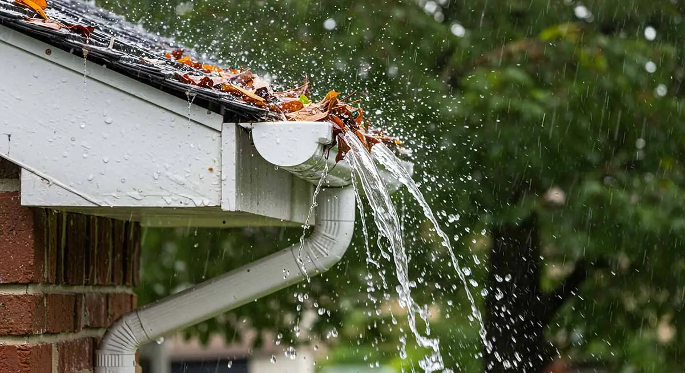

Gutter Cleaning Services
Clogged gutters full of leaves, twigs, and debris? That’s a serious problem in Austin. Our professional gutter cleaning team clears everything out so water flows properly and away from your home. Regular gutter cleaning prevents foundation issues, roof leaks, and pest problems caused by Central Texas weather.

Price
$150–$300 depending on house size, number of stories, and gutter condition. A typical single-story home usually costs around $200. Two-story homes or heavily clogged gutters cost more.
Why Gutter Cleaning is Essential
- Prevent Water Damage: Stops overflow that can damage your roof, siding, and foundation.
- Avoid Pest Problems: Removes debris that attracts mosquitoes, rodents, and birds.
- Protect Curb Appeal: Clean gutters make your Austin home look well-maintained.
- Extend Gutter Life: Prevents rust, corrosion, and sagging caused by built-up debris.

Our Gutter Cleaning Process
- Inspection: We check the condition of your gutters, downspouts, and roof edges.
- Debris Removal: We carefully remove leaves, twigs, dirt, and nests using professional tools.
- Flushing & Testing: We flush the system and test water flow to ensure everything drains properly.
- Final Inspection: We walk the property with you and confirm your gutters are fully clear and functioning.
Frequently Asked Questions
How much does gutter cleaning cost in Austin?
Gutter cleaning in Austin typically costs between $150 and $300. A standard single-story home usually runs around $175–$225. Two-story homes, large roofs, or gutters with heavy debris and nests common in Leander, Cedar Park, and Round Rock can range from $250–$300. We always provide a clear upfront quote after seeing your property.
Do you offer gutter cleaning in Cedar Park, Leander, and Round Rock?
Yes! We provide professional gutter cleaning throughout Austin and all surrounding areas including Cedar Park, Leander, West Lake Hills, Bee Cave, South Austin, North Austin, East Austin, Bastrop, Kyle, Georgetown, Pflugerville, and Round Rock.
How often should I clean my gutters in Austin?
Most Austin-area homes need gutters cleaned 2–3 times per year. Because of our heavy spring rains, abundant trees, and fall leaf drop, we recommend cleaning in early spring and late fall at minimum. Homes near trees or in shaded neighborhoods often need it more frequently.
Is gutter cleaning a hard DIY project?
Gutter cleaning can be dangerous and time-consuming as a DIY job. Working on ladders around roofs is risky, especially on two-story homes common in Bee Cave and West Lake. Professionals have the right equipment and can do the job safely and much faster.
What happens if I don’t clean my gutters?
Clogged gutters in Austin can cause water to overflow, leading to roof leaks, damaged siding, foundation problems, and even indoor water damage. They also create breeding grounds for mosquitoes and attract rodents.
Do you install gutter guards during cleaning?
Yes, we can install high-quality gutter guards if you want to reduce future cleaning needs. We’ll discuss the best options for your home during the visit.
How long does gutter cleaning take?
Most residential gutter cleaning jobs in the Austin area take 1–2 hours depending on house size and condition. Two-story homes or heavily clogged systems may take a little longer.
Can you clean gutters on two-story homes?
Yes, we regularly clean gutters on two-story and taller homes using proper safety equipment and extension tools. This is very common in neighborhoods across Round Rock, Pflugerville, and Georgetown.
Do clogged gutters cause foundation problems in Central Texas?
Yes. When gutters overflow, water pours straight down next to the foundation. Over time this leads to soil erosion, cracks, and expensive foundation repairs — a big issue in Austin’s clay-heavy soil.
When is the best time to get gutters cleaned in Austin?
The best times are early spring (before heavy rains) and late fall (after leaves drop). Many homeowners also schedule a cleaning after major storms.
How soon can you clean my gutters in the Austin area?
We can usually schedule gutter cleaning within 2–7 days. Spring and fall are our busiest seasons, so booking early is recommended.
Get Your Gutters Cleaned Today!
Protect your home from water damage and keep your gutters flowing freely. Contact Moody Home Services for fast, professional gutter cleaning in Austin, Cedar Park, Leander, Round Rock, Pflugerville, and surrounding areas.